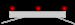
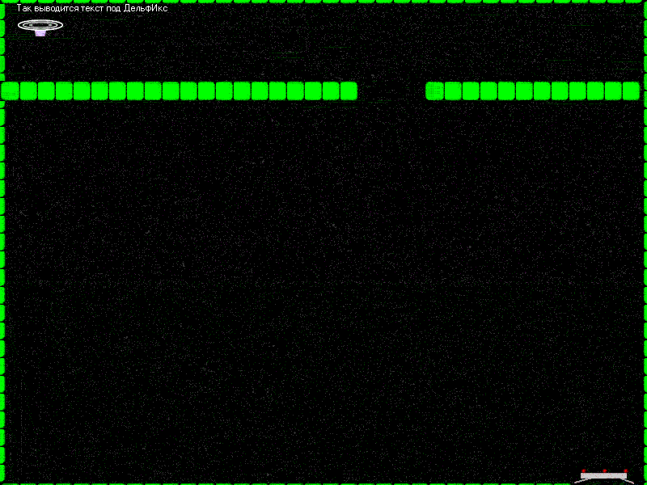

Обработка событий клавиш в DelphiX
Можно будет размножить её, зная, что её размеры 23х23 и выстроить лабиринт. Кроме того не помешает создать спрайт "посадочной площадки", чтобы в лабиринте была цель. У меня она будет такой:
Теперь о том, как мы будем изменять координаты спрайта при создании. Конструктор Twall.Create теперь будет выглядеть так:(wx и wy - переменные типа Integer)
constructor Twall.Create(AParent: TSprite);
begin
inherited Create(AParent);
Image := Form1.ImageList.Items.Find('wall');
X := wx;
Y := wy;
Z := 0;
Width := Image.Width;
Height := Image.Height;
PixelCheck := True;
end;
Как вы уже наверно догадались, мы будем менять wx и wy для изменения координат стенки. Для того, чтобы построить вертикальную или горизнтальную линии мы будем использовать цикл for чтобы не мучиться. Привожу листинг стенки(сами разберетесь, листинг совсем несложный).
wy:=100;wx:=0;tx:=0;ty:=0; for i:=1 to 20 do begin Twall.create(SpriteEngine.Engine); wx:=wx+22; end; wy:=100;wx:=525; for i:=1 to 12 do begin Twall.create(SpriteEngine.Engine); wx:=wx+22; end; wy:=-20;wx:=0; for i:=1 to 36 do begin Twall.create(SpriteEngine.Engine); wx:=wx+22; end; wy:=597;wx:=0; for i:=1 to 32 do begin Twall.create(SpriteEngine.Engine); wx:=wx+22; end; wy:=0;wx:=-18; for i:=1 to 36 do begin Twall.create(SpriteEngine.Engine); wy:=wy+22; end; wy:=0;wx:=795; for i:=1 to 36 do begin Twall.create(SpriteEngine.Engine); wy:=wy+22; end;
После всего этого должна получиться примерно такая картинка
Теперь главное: заставить тарелку двигаться в зависимости от того, какие клаишы нажаты. "Раскладка" будет простой: W A S D, по их расположению, то есть W-вверх S-вниз А-влево D-вправо. Теперь о том, как мы это будем делать: мы будем менять две переменные, tx и ty(по аналогии с wx и wy). Менять мы их будем так: нажали W - ty увеличилась на 1, отпустили - уменьшилась. Создадим обработчики двух процедур: onKeyUp и onKeyDown. В onKeyDown'е пишем:
case chr(ord(Key)) of 'W','Ц': ty := -1; 'S','Ы': ty := 1; 'D','А': tx := 1; 'A','Ф': tx := -1; end;
Разбираем: case ... of ... end; - обычный оператор перебора вариантов, в вариантах стоят две буквы для того, чтобы программа не зависела от того, какой язык включен - русский или английский. В onKeyUp'е пишем(разбора не будет):
case chr(ord(Key)) of 'W','Ц': ty := 0; 'S','Ы': ty := 0; 'D','А': tx := 0; 'A','Ф': tx := 0; end;
Теперь добавляем гравитацию(в Ttarelka.Move вместо Y:=Y+ty пишем Y:=Y+ty+1) и этот урок закончен!
DelphiWorld 6.0